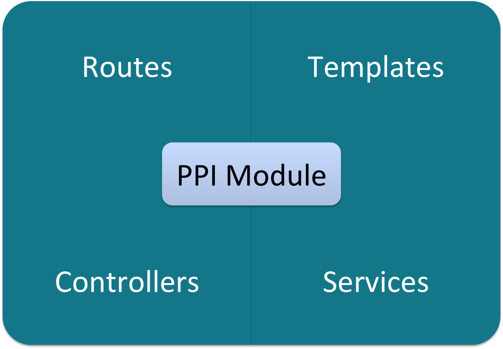
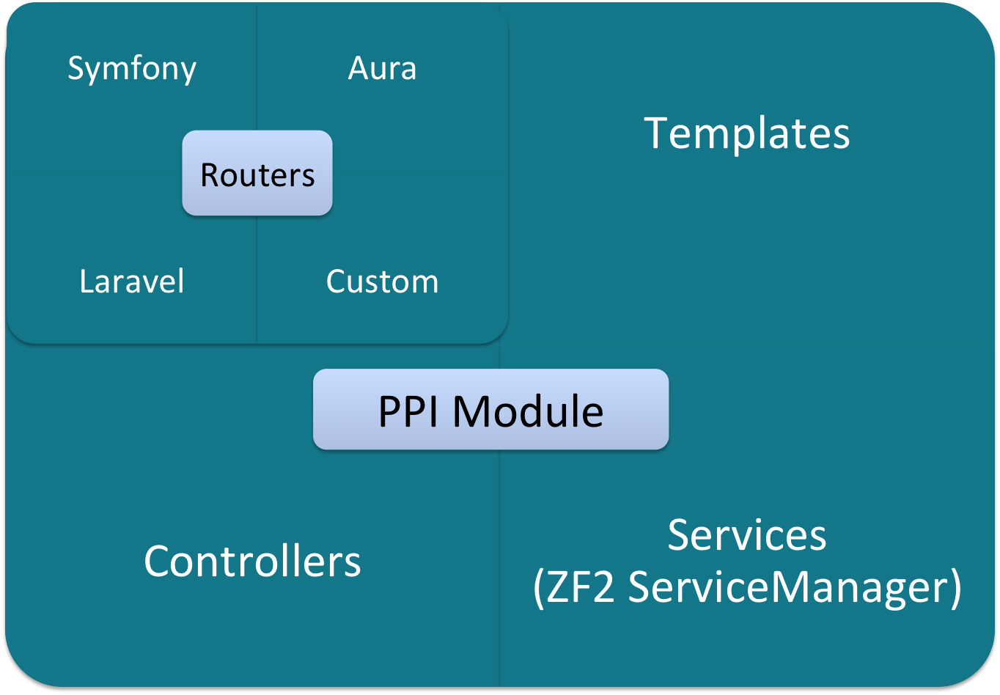
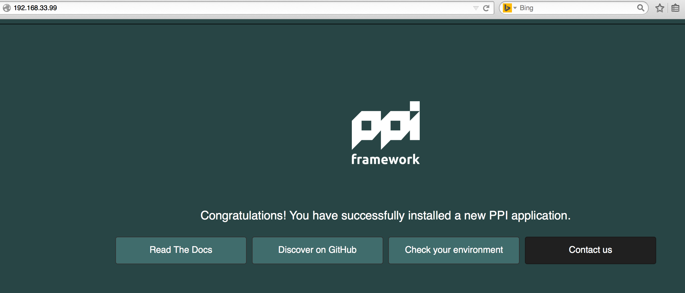

The PHP Interoperability Framework

Paul Dragoonis
- @dr4goonis
- Lead developer of PPI
- Software Consultant from Scotland
- Using PHP since 2001
- PHP community guy, internals, php.net and PHP-FIG

Vítor Brandão
- @noiselabs
- PPI co-lead dev
- NoiseLabs Consulting Ltd
- Born in ☼ Portugal, currently in ☂ England
- Sf2 bundles, ZF2, Python2PHP ports
- QA at Gentoo Linux
Our message
Frameworks are very powerful! but.. they come at a cost
How you use them and depend on them. That's what's important
Today
Showing you how to unleash the power of not just 1 framework, but many!
How that benefits you, your team and your project
Framework Power!
Power is defined by:
- Speed
- Flexibility
- Eco-system
Power comes at a cost
what is the cost?
Vendor lock-in! (technical debt)
This means:
Limited technology stack
Limited team experience
Limited POWER!!!
Common Path of starting a project
Step 1: customer tells you what they want (kind of)
Step 2: you choose a framework/toolkit that suits that project
Step 3: you build it
What happens next?
Step 4: customer changes their mind on what they want
Step 5: the tool you chose in the beginning, is no longer the most relevant one
Step 6: you can't switch because you're locked into that vendor
Step 7: you stick with the tool because it's too difficult to switch to the correct tool
Can't switch? why?
Existing frameworks force a 1-to-1 relationship between your app and the framework vendor.
You are tightly coupled to the framework that your app was built on.
You can't move your code between your Symfony apps and Laravel apps
It's not your fault!
You're not psychic! You cannot predict the future
but, you can prepare for it :-)
PPI will help you with this
It doesn't have to be this way
PPI prepares you for change. It's DESIGNED for change.
Why?
Your app code belongs to you, not to your framework.
You're in charge!
P.P.I.?
Hmm... what does PPI stand for? Not much, but let's try!
- PHP
- Phramework

- Interoperability

What is PPI?
It's not a framework
but, you can use it like a framework
Really, it's a framework delivery engine
It delivers core parts of frameworks to your app
Individually, to the modules of your app
What you can use PPI as?
An engine that you can boot() up.
This engine can be called as middleware, or booted, from inside existing apps
i.e: Wordpress, Drupal, Legacy App
A command line app
A full-stack framework to dispatch() HTTP requests
Powered by solid components

What's inside the PPI Engine?
composer.json:
"require": {
"psr/log": "~1.0",
"psr/http-message": "^0.11",
"symfony/class-loader": "~2.7",
"symfony/dependency-injection": "~2.7",
"symfony/config": "~2.7",
"symfony/console": "~2.7",
"symfony/debug": "~2.7",
"symfony/finder": "~2.7",
"symfony/http-foundation": "~2.7",
"symfony/routing": "~2.7",
"symfony/templating": "~2.7",
"symfony/yaml": "~2.7",
"symfony/http-kernel": "~2.7",
"symfony/framework-bundle": "~2.7",
"zendframework/zend-eventmanager": "~2.3",
"zendframework/zend-modulemanager": "~2.3",
"zendframework/zend-servicemanager": "~2.3",
"zendframework/zend-loader": "~2.3",
"symfony-cmf/routing": "1.3.0"
}
PPI is Modular by design
You only need to add what you need
composer.json
"ppi/smarty-module": "~1.0",
"ppi/twig-module": "~1.0",
"ppi/mustache-module": "~1.0"
"ppi/laravel-routing": "~1.0"
"ppi/aura-routing": "~1.0"
"ppi/symfony-routing": "~1.0"
"ppi/datasource-module": "~1.0", // LaravelDB, Eloquent, Doctrine ..etc
"ppi/cache-module": "~1.0",
PSR's
Spearhead PHP-FIG concepts and ideas with a real-life usage for these standards.
We built our own interop layers first, then backport them to PHP-FIG.
A friendly environment for swappable 3rd-party components.
PSR - What's in // What's coming?

PPI is a PSR-aware framework
You can easily add more libraries into the mix when they implement a PSR.
When consuming frameworks like (ZF2, SF2, Aura2) - that don't support PSR-X yet - PPI bridges the gap for you.
PSR-7: Request Interface
composer.json:"require": {
"psr/http-message": "~1.0"
}
PPI/Framework/Http/Request.php
use Psr\Http\Message\RequestInterface;
use Symfony\Component\HttpFoundation\Request as SymfonyHttpRequest;
/**
* HTTP messages consist of requests from a client to a server and
* responses from a server to a client. This interface defines the
* methods common to each.
*/
class Request extends SymfonyHttpRequest implements RequestInterface
{
public function withBody(StreamInterface $body) {
$new = clone $this;
$new->stream = $body;
return $new;
}
}
PSR-7: Request Interface in controllers
composer.json:
<?php
namespace Application\Controller;
use PPI\Framework\Module\Controller as BaseController;
use Psr\Http\Message\RequestInterface;
class Mycontroller extends BaseController
{
public function indexAction(RequestInterface $request)
{
if ('POST' === $request->getMethod()) {
// do POST stuff
}
}
}
PSR-6: Caching Interface
In production for over 2 years now.
namespace PPI\CacheModule\Cache\Driver;
use PPI\CacheModule\Cache\CacheItem;
use PPI\CacheModule\Cache\CacheInterface;
class RedisCache implements CacheInterface {
// ...
}
Drivers: APC, Disk, Memcached, Memory, Xcache.
Container Interface
namespace PPI\Framework\ServiceManager;
use Symfony\Component\DependencyInjection\ContainerInterface;
use Zend\ServiceManager\ServiceManager as BaseServiceManager;
/**
* ServiceManager implements the Service Locator design pattern.
*
* The Service Locator is a service/object locator, tasked with retrieving other
* objects. We borrow this one from Zend Framework 2.
*/
class ServiceManager extends BaseServiceManager implements ContainerInterface
{
/**
* Register a service with the locator.
*/
public function set($name, $service, $shared = true)
{
return $this->setService($name, $service, $shared);
}
}
Router Interface?
In PPP 2.1, using a Chained Router
Will push a interface in upcoming releases
Modules
PPI Module extends ZF2 Module

PPI Module With Routers

PPI Module With Templating Engines

Object Mediation
No abstraction! :-)
No added abstraction on top of existing framework.

Module1 Rest API Module

Module2 MVC Full Stack App

Module3 MVC Full Stack App
PPI Router
We made a routing interoperability layer (Routing PSR?).
Mediate routing and request information from PPI to Aura (for example).
If a Routing PSR is created, we get to throw away a lot of code

3. Practical Examples
Using PPI
Installation
21st century. Use composer:
Step 1:
$ composer create-project -sdev --no-interaction \
ppi/skeleton-app /var/www/skeleton
and for your convenience:
Step 2
$ vagrant up ppi-lamp
and now...
Skeleton App 
$ app/console

Module Structure
MyModule
|
├── Module.php
├── resources
│ ├── config
│ │ └── config.yml
│ ├── routes
│ │ ├── aura.php
│ │ └── symfony.yml
│ │ └── laravel.php
│ └── views
│ └── index
│ ├── index.html.mustache
│ ├── index.html.php
│ ├── index.html.smarty
│ └── index.html.twig
└── src
├── Services
│ └── DomainClass.php
├── Controller
│ ├── Index.php
Powerful configuration
<?php
// Raw PHP
$app->loadConfig('config/app.php');
// Symfony goodness
$app->loadConfig('config/app.yml');
ZF-like configuration
app.php
<?php
$config = [];
$config['framework'] = [
'templating' => ['engines' => ['php', 'smarty', 'twig')] ,
'skeleton_module' => ['path' => './utils/skeleton_module']
];
$config['datasource'] => [
'connections' = require __DIR__ . '/datasource.php'
];
$config['modules'] = require __DIR__ . 'modules.php';
return $config;
Powerful configuration
Symfony-like YAML
app.yml
imports:
- { resource: datasource.yml }
- { resource: modules.yml }
framework:
templating:
engines: ["php", "smarty", "twig"]
skeleton_module:
path: "./utils/skeleton_module"
monolog:
handlers:
main:
type: stream
path: %app.logs_dir%/%app.environment%.log
level: debug
Application structure
public/index.php
<?php
require_once 'app/init.php';
// Set the environment
$env = getenv('PPI_ENV') ?: 'dev';
$debug = getenv('PPI_DEBUG') !== '0' && $env !== 'prod';
// Create and configure the Application
$app = new PPI\Framework\App(array(
'environment' => $env,
'debug' => $debug,
'rootDir' => realpath(__DIR__.'/../app')
));
$app->loadConfig($app->getEnvironment().'/app.php');
// Just Boot, no HTTP
$app->boot()
// OR: Handle requests
$app->run();
Routing Defined Per Module
class Module extends AbstractModule implements ModuleInterface
{
public function getRoutes() {
return $this->loadAuraRoutes(__DIR__ . '/resources/routes/aura.php');
return $this->loadSymfonyRoutes(__DIR__ . '/resources/routes/symfony.yml');
return $this->loadLaravelRoutes(__DIR__ . '/resources/routes/laravel.php');
}
}
Recap
PPI is ready for you to build projects in.
Release 2.1 is in alpha now and your feedback is welcome.
PPI prepares you for change. It's DESIGNED for change.


- Documentation: http://docs.ppi.io
- Gitter: gitter.im/ppi/chat
- Twitter: @ppi_framework
- Email: paul@ppi.io or vitor@ppi.io
- IRC: #ppi at freenode
Thank you Boston.